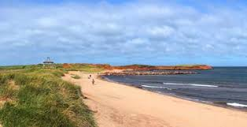

small disclaimer most of the places on this list, I have not actually visited.
-
The Beach
I can imagine that most people, when thinking of Canada, tend to think of cold weather. You might be genuinely surprised to learn that Canada can get sweltering hot days easily as high as 104F(40C). With that you might be trying to figure out, if your lucky you could go to a nearby beach to cool off. In addition to cooling off, The beach and the mountains can provide beautiful views that you might not find in the USA. When I got to go to the beach, I saw some of the most transparent water I had ever seen. The beach would be a great place to go to after a long trip or on a beautiful warm day.
-
Go to a public Library
sorry this is an incomplete entry!